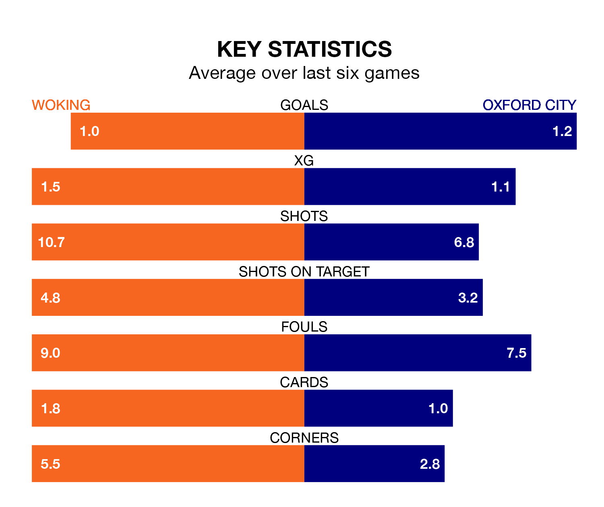

Oxford City come to the Laithwaite Community Stadium to play Woking on Saturday in poor form, having collected just three points from their last six games.
The visitors have won just one of their last six fixtures, while the Cardinals have a win and two draws.
Oxford are 23rd in the table after 28 games, of which they have won six and drawn six, earning 24 points.
Woking are three places ahead of City in 20th, with seven wins and six draws putting them on 27 points.
With 28 goals in 27 games so far this season, the Cardinals are the league's joint-third-lowest scorers with 1.0 goals per game. But they are conceding fewer than average too, letting in 37 goals at a rate of 1.4 per game.
The visitors are also below average scorers, with 1.4 goals per game, compared to a league average of 1.5. They have conceded 1.9 goals per game.
Woking's last match was on January 6, a 3-0 loss against Solihull Moors.
Oxford lost 2-1 against Hartlepool United last time out, also on January 6, with Seydil Toure on the scoresheet.
Updated: 10:02 (UTC), 19/01/24